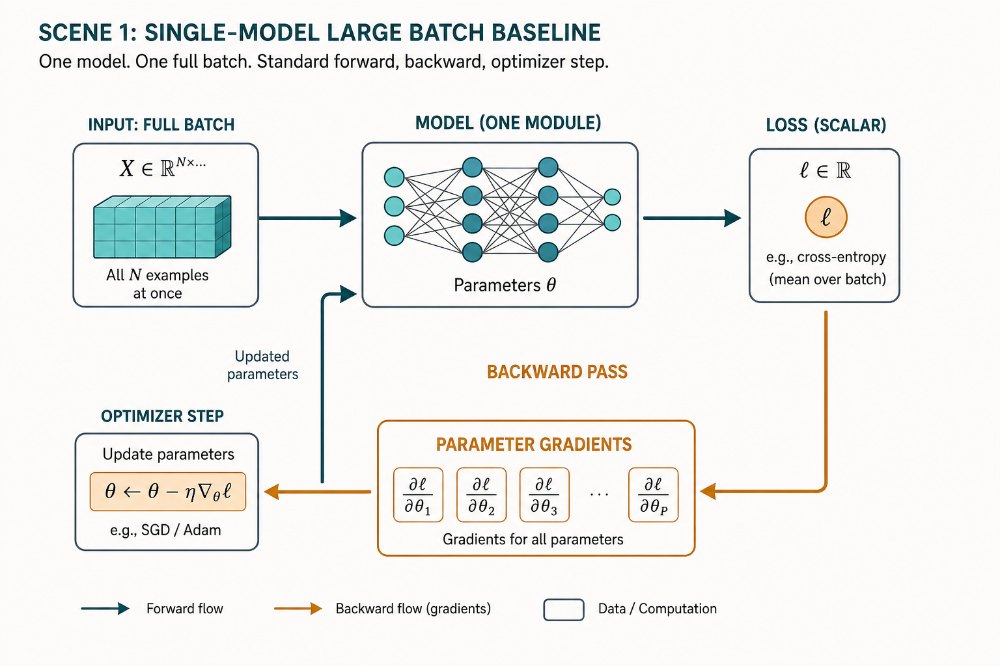
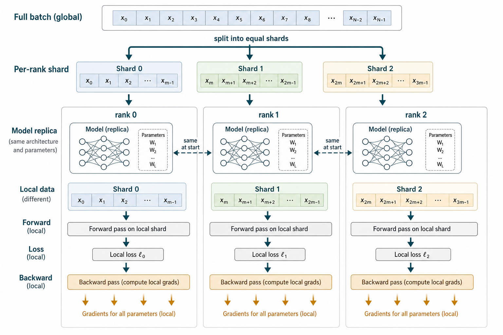
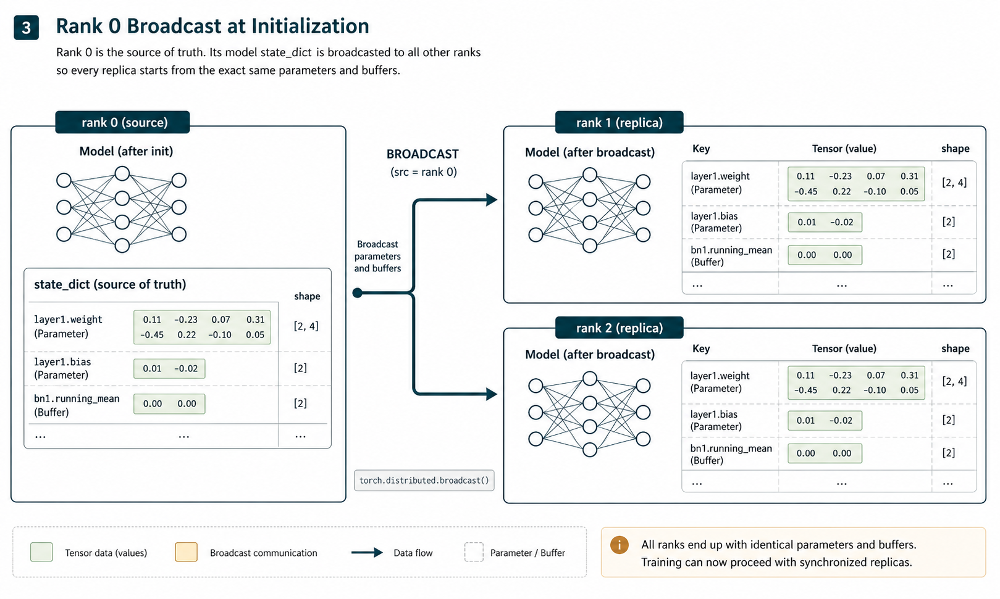
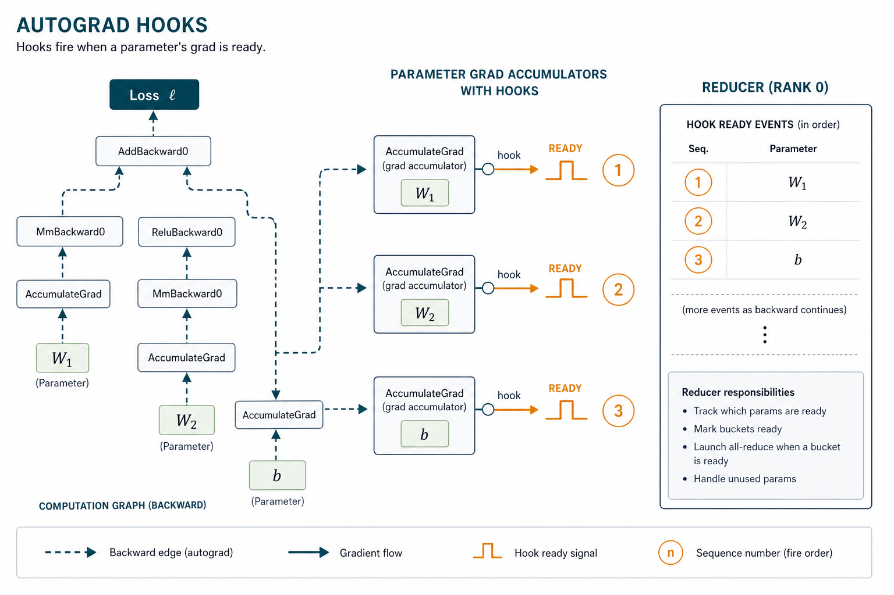
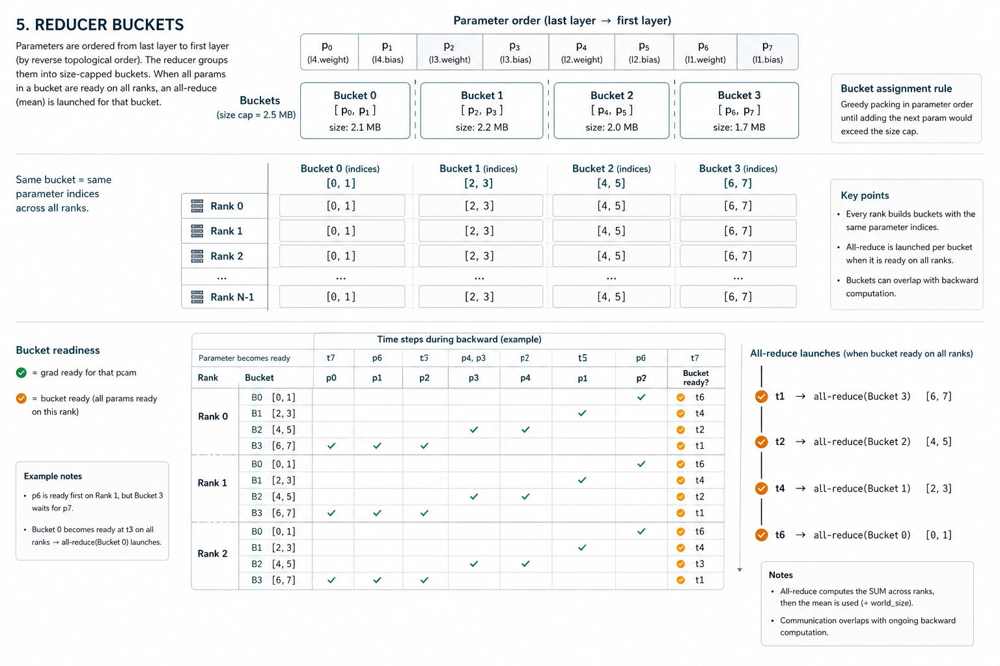
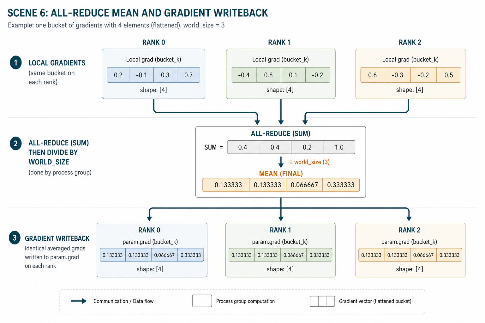
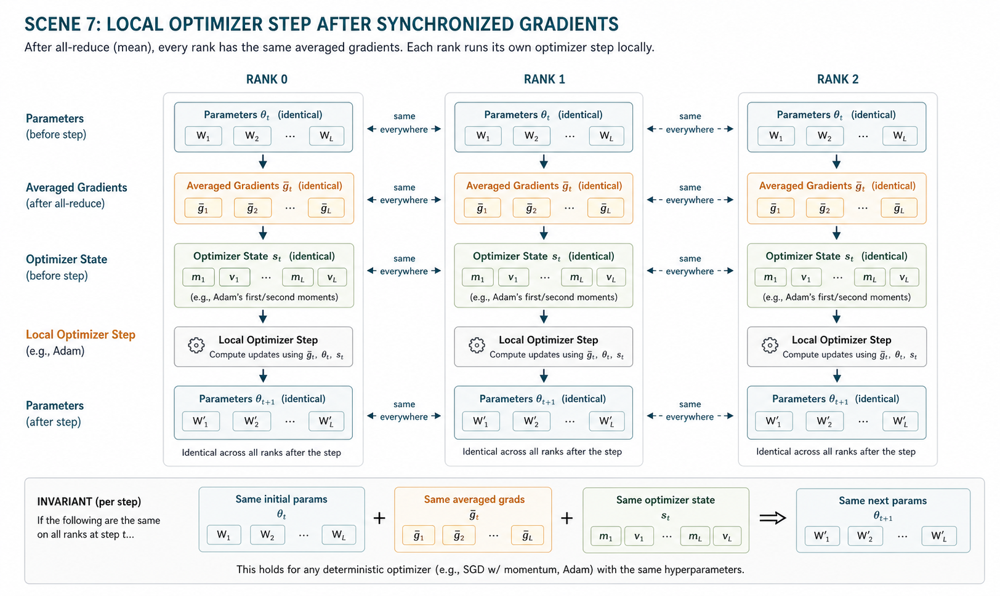
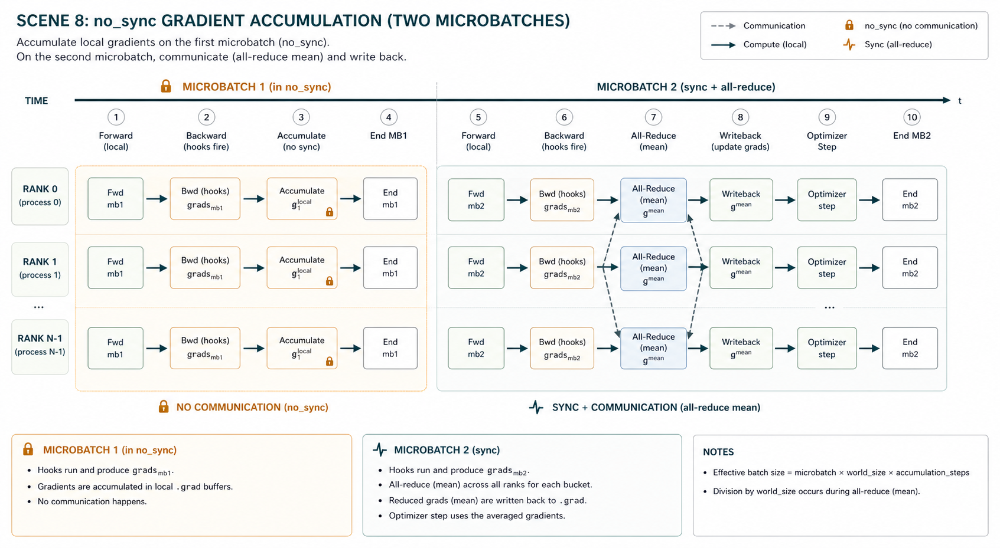
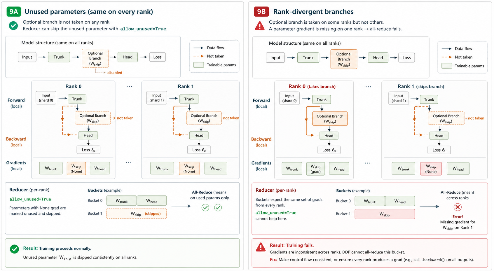
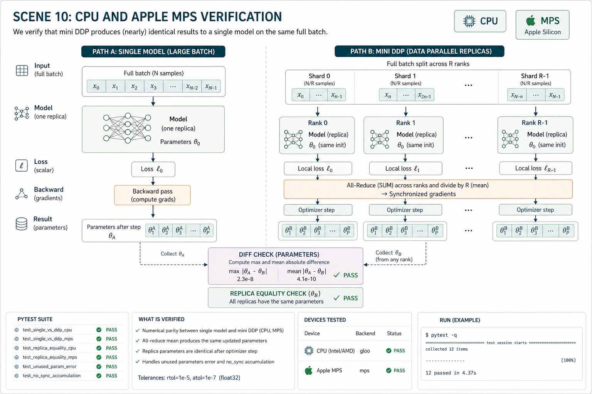

从一轮普通 backward 开始，自己实现一个 DDP。
这不是 PyTorch API 速查，也不是分布式训练黑盒说明。目标是把每个前提拆开： 为什么要复制模型，为什么要先 broadcast，为什么 hook 能知道梯度 ready， 为什么 bucket 不改变数学结果，为什么 all-reduce mean 后本地 optimizer 仍然正确。
1. 先固定单模型训练的参照物
学 DDP 前要先把“普通一步训练”说清楚。否则后面谈 replica、rank、all-reduce 时， 很容易忘记我们到底要和什么结果保持一致。

普通训练的一步
一个 PyTorch module 的参数存在 `model.parameters()` 里。forward 只负责计算输出； loss 把输出和 label 变成一个标量；`loss.backward()` 沿 autograd graph 反向传播， 把每个叶子参数的梯度写入 `param.grad`；optimizer 读取 `param.grad` 并更新参数。
DDP 的正确性目标不是“看起来用了很多设备”，而是：如果把一个大 batch 切成多个 shard， 多个 replica 合作训练后，参数更新应当等价于单模型直接训练这个完整 batch。
对 mean reduction loss 和等大小 shard 来说，DDP 平均各 rank 的本地梯度， 应该得到单模型完整 batch 的平均梯度。
opt.zero_grad(set_to_none=True)
loss = F.cross_entropy(model(x_full_batch), y_full_batch)
loss.backward()
opt.step()2. 数据并行从 rank 和 replica 开始
DDP 的基本结构是多份完整模型副本。每个 rank 处理不同数据 shard， 但所有 rank 在同一步训练中必须维护同一套参数语义。

三个术语必须先区分
`mini-ddp2` 为了教学不用多进程，而是在一个 Python 进程里 deep-copy 出多个 replica。 这让我们可以在 CPU 或 MPS 上检查每个 rank 的参数和梯度，不必先处理 `torchrun`、端口、环境变量和 backend。
self.replicas = nn.ModuleList(
[copy.deepcopy(module).to(self.device) for _ in range(world_size)]
)DDP 是 data parallel。每个 rank 都有完整模型。如果你把模型层切到不同设备上， 那是 model parallel 或 pipeline parallel 的问题。
3. 为什么构造阶段必须从 rank 0 broadcast
如果两个 replica 的初始参数不同，那么即使之后每轮梯度完全相同，它们也会沿着不同起点更新。 所以 DDP 的第一个动作是统一初始状态。

parameter 和 buffer 都属于训练状态
`state_dict()` 不只包含 `nn.Parameter`。像 BatchNorm 的 `running_mean`、`running_var` 这类不会通过 optimizer 更新的 tensor 也在里面，它们是 buffer。生产 DDP 默认会在 forward 前广播 buffer， 避免各 rank 的统计状态长期分叉。
source = {
name: value.detach().clone()
for name, value in replicas[source_rank].state_dict().items()
}
for rank, replica in enumerate(replicas):
if rank != source_rank:
replica.load_state_dict(source)同步梯度只能保证“从同一个点出发继续同步”。它不能修复“起点本来就不同”的 replica。
4. hook 是 DDP 接入 autograd 的入口
用户没有在每个参数上手动调用通信。DDP 能工作，是因为它提前把 hook 注册到每个参数的梯度累加路径上。

hook 的职责很小，但位置很关键
hook 不负责计算梯度。梯度由 autograd 计算。hook 只是在梯度出现的那一刻得到一次通知。 真实 DDP 的 Reducer 用这个通知判断 bucket 何时可以通信。`mini-ddp2` 也保留这个事件流， 只是把异步通信简化成 backward 结束后的同步处理。
def _make_hook(self, rank: int, param_index: int):
def hook(grad: Tensor) -> Tensor:
bucket_index = self.param_to_bucket[param_index]
self._ready[bucket_index].add((rank, param_index))
return grad
return hook
param.register_hook(self._make_hook(rank, param_index))5. Reducer bucket 改变通信粒度，不改变数学
对每个参数单独通信会很碎。DDP 把多个参数的梯度放进 bucket， 等 bucket 内所有梯度都 ready 后，把它们 flatten 成一段连续 tensor 做通信。

为什么从参数尾部开始打包
神经网络 backward 的 ready 顺序通常和 forward 相反：最后几层参数更早产生梯度。 真实 DDP 的 bucket 设计会考虑反向传播顺序，让早 ready 的 bucket 尽早通信。 `mini-ddp2` 不实现异步 overlap，但仍然按反向参数顺序构造 bucket，让教学结构贴近真实机制。
for param_index in reversed(range(len(reference_params))):
param_bytes = param.numel() * param.element_size()
if current and current_bytes + param_bytes > cap_bytes:
reversed_buckets.append(current)
current = []
current_bytes = 0
current.append(param_index)对 bucket 中每个参数，都必须看到所有 rank 的 hook 事件。否则 Reducer 无法保证同一个 flatten tensor 在所有 rank 上有相同结构。
6. all-reduce mean 把本地梯度变成全局平均梯度
每个 rank 的 gradient 来自本地 shard。DDP 同步的不是参数，而是梯度。 同步后的 `param.grad` 在所有 rank 上相同。

`mini-ddp2` 在 `synchronize()` 中先找出一个 bucket 的 active 参数，把每个 rank 的对应梯度 flatten。 `InMemoryProcessGroup.all_reduce_mean()` 返回平均后的 flat tensor，然后再按原梯度 shape unflatten， 写回每个 rank 的 `param.grad`。
flat_grads_by_rank = [
flatten(rank_grads_for_bucket)
for rank in range(world_size)
]
averaged_flat = process_group.all_reduce_mean(flat_grads_by_rank)
averaged_grads = unflatten_like(averaged_flat, templates)
for rank in range(world_size):
for param, averaged_grad in bucket_params:
param.grad = averaged_grad.clone()optimizer step 前，各 replica 的参数相同，`param.grad` 也相同。
7. 为什么每个 rank 仍然只需要本地 optimizer
DDP 没有发明一个全局 optimizer。每个 rank 都运行普通 optimizer。 正确性来自参数、梯度和 optimizer state 的同步不变量。

opts = [torch.optim.SGD(replica.parameters(), lr=0.1)
for replica in ddp.replicas]
for opt in opts:
opt.step()
ddp.assert_replicas_equal()这里有一个常见误解：DDP 不是先让每个 rank 更新参数，然后再平均参数。 DDP 的主路径是平均梯度，然后每个 rank 本地更新。平均参数会改变 optimizer state 的语义， 尤其是 momentum、Adam 的一阶二阶矩估计等状态。
8. no_sync 只是跳过通信，不是跳过 backward
梯度累积时，我们希望多个 microbatch 的梯度先累到本地 `.grad`， 等到最后一个 microbatch 再通信。`no_sync()` 就是这个开关。

for opt in opts:
opt.zero_grad(set_to_none=True)
with ddp.no_sync():
losses = [loss_for_rank(rank, microbatch_1) for rank in range(world_size)]
ddp.backward(losses) # local grad accumulates, communication is skipped
losses = [loss_for_rank(rank, microbatch_2) for rank in range(world_size)]
ddp.backward(losses) # accumulated local grads are averaged now
for opt in opts:
opt.step()如果你在 `no_sync()` 后错误地 `zero_grad()`，前一个 microbatch 的本地梯度就被清掉了。 如果你永远不再执行同步 backward，各 rank 只会保留自己的本地梯度。
9. unused parameter 和分叉控制流是 DDP 的高频坑
Reducer 期待所有 rank 对同一个 bucket 有相同结构的梯度。 参数没用到并不总是错误，但 rank 之间使用图不一致一定危险。

两种情况要分开
losses = [
F.cross_entropy(ddp(0, xs[0], use_optional=True), ys[0]),
F.cross_entropy(ddp(1, xs[1], use_optional=False), ys[1]),
]
with pytest.raises(RuntimeError, match="used on ranks"):
ddp.backward(losses)这个细节在真实训练里经常出现：随机分支、条件 dropout、classifier-free guidance、 某些 batch 才触发的 auxiliary head，都可能让不同 rank 走不同参数路径。 解决方式通常是同步随机决策，或确保所有 rank 的图结构一致。
10. 用测试证明每个前提都没有偷懒
教学实现不能只靠解释。`mini-ddp2` 的测试直接验证大 batch 等价性、broadcast、bucket、 hook、no_sync、unused parameter 和 MPS smoke path。

uv run --extra dev pytest
uv run mini-ddp2-demo --device cpu
uv run mini-ddp2-demo --device auto- DDP 一步更新是否等价于单模型完整 batch。
- rank 0 broadcast 是否复制 parameter 和 buffer。
- 每个 trainable parameter 是否被分配到且只分配到一个 bucket。
- autograd hook 是否标记每个 used parameter ready。
- `no_sync()` 是否先积累本地梯度，再在下一次同步。
- unused parameter 和 rank-divergent branch 是否给出可解释错误。
- MPS 可用时，教学语义是否仍然能跑通。
最终心智模型
DDP 的核心不是“魔法地让多卡训练变快”，而是维护一组严格不变量： 初始参数相同；每个 rank 处理不同数据；autograd hook 告诉 Reducer 梯度 ready； Reducer 用 bucket 对齐梯度结构；all-reduce mean 把本地梯度变成全局平均梯度； optimizer 在每个 rank 本地执行，但因为输入状态相同，所以输出参数仍然相同。